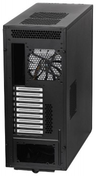
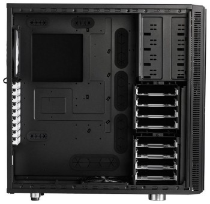
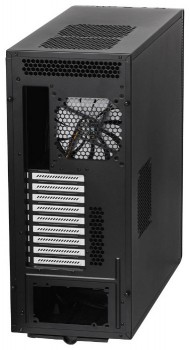
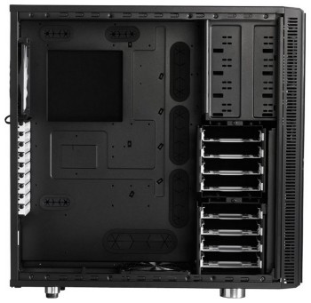

.jpg "Вид спереди") 



Корпус для ПК Fractal Design Define XL R2 черный XL-ATX Full-Tower. Этот корпус относится к формату «фулл-тауэр» (полноразмерная башня), а значит, внутри него без проблем поместится много, очень много «железа».
Корпус Fractal Design Define XL R2 — модель формата Full Tower строгого черного цвета. Корпус выполнен из миллиметровой стали, отличается минималистичным дизайном и внушительными габаритами. Главная отличительная черта Fractal Design Define XL R2— фронтальная панель с прокладкой шумоизоляции, которую можно открывать подобно дверце шкафа. Боковые панели также оборудованы шумоизолирующими прокладками. Все провода и кабели выводятся через специальные прорези, чтобы не мешать доступу к элементам компьютера. Система управления находится на верхней панели, где расположены порты USB 2.0 и 3.0, кнопки питания и перезагрузки, и два стандартных аудиогнезда. На верхней панели также расположены две вентиляционные решетки, куда можно установить пару дополнительных вентиляторов. Внутреннее пространство корпуса достаточно велико для свободного размещения блока питания, до четырех 5.25-миллиметровых устройств и до восьми жестких дисков.
| Размещение HDD: | поперечное |
| Размер тыловых вентиляторов: | 140мм |
| Расположение БП: | нижнее |
| Количество слотов расширения: | 9 |
| Вентиляторы на задней панели: | 1 |
| Вес корпуса: | 16.4 |
| Тип корпуса: | Full-Tower |
| Материал корпуса: | сталь |
| Фронтальные аудио-разъемы: | Да |
| Фронтальные разъемы USB 2.0: | 2 |
| Отсеки 3,5″ внутренние: | 8 |
| Отсеки 5,25″ внешние: | 4 |
| Форм-фактор материнской платы: | XL-ATX |
| Толщина стенок корпуса: | 1 |
| Максимальная длина видеокарты: | 470 |
| Размеры корпуса: | 232×564×570мм |
| Цвет: | черный |
| Наличие блока питания: | Отсутствует |
| Гарантия (мес): | 24 |
| Бренд: | FRACTAL DESIGN |
| Фронтальные разъемы USB 3.0: | 2 |
| Вентиляторы на передней панели: | 1 |
| Размер фронтальных вентиляторов: | 140мм |
| Число доп. вентиляторов 140мм: | 3 |
| Блок управления вентиляторами: | Да |
| Фронтальная откидная панель («дверь»): | Да |
| Размер нижних вентиляторов: | 140мм |
| Вентиляторы на нижней панели: | 1 |
Обзор корпуса Fractal Design Define XL R2 на сайте www.overclockers.ua